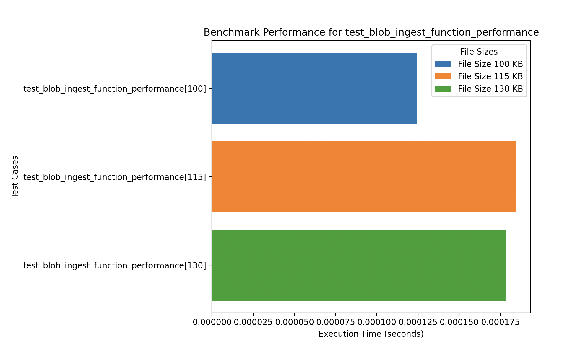

Testing Strategies
Exploring the methodologies behind our project's quality assurance.

Testing Strategy
For the FinSync project, our testing approach is meticulously designed to ensure thorough coverage and robustness of the application. We have achieved a code coverage of over 95%, reflecting our commitment to quality and our confidence in the product delivered to our clients.
Fully-automated:
- Unit testing: We meticulously test each component to ensure individual functionalities operate as intended.
- Integration testing: This ensures that various components of the application work together seamlessly, validating the entire workflow from end to end.
- Performance testing: We assess the application's performance to ensure it meets the required speed and efficiency under varying loads.
Semi-automated:
- User Acceptance testing: Conducted with selected end-users to ensure the application meets the real-world scenarios and fulfills user requirements.
Unit Testing
Unit testing was a foundational aspect of our quality assurance process. We tested each module in isolation to ensure that all individual functions and components behave as expected.
Backend Testing (Python)
We used pytest to write and run unit tests for all backend Azure Functions. Each core file, including the Excel processing pipeline, Blob triggers, and ingestion logic, was individually tested. The final test coverage for the backend reached 95%, with multiple files achieving full 100% coverage.
üì∏ Backend coverage screenshot:
Frontend Testing (TypeScript)
On the frontend, we used Jest to create unit tests for our key logic and components. Tests were written for our Excel parser and upload logic, and we ensured that all functions behaved correctly even with edge cases.
The frontend code achieved 92.52% statement coverage and 100% function coverage, with only a few uncovered branches due to conditional rendering that was less critical for unit testing.
üì∏ Frontend coverage screenshot:
Integration Testing
To validate the end-to-end functionality of our data processing pipeline, we developed a Python-based integration test script instead of relying on manual uploads. This script simulates a complete run of the system—starting from a document upload, through all intermediate steps, and finally verifying the generated outputs.
1. Programmatic Upload to Blob Storage
The script uploads Chanel UK Billed.xlsx directly to the subcontractor-documents container using the Azure SDK. This initiates the automated pipeline.

2. Automatic Conversion to CSV
The Azure Function reads the uploaded Excel file and converts it into CSV format, which is stored in the csv-conversion container.
3. CSV Triggers Ingestion Function
Once the CSV is uploaded, a second Azure Function is triggered. It:
- Parses the CSV with
pandas - Ingests the data into Azure Data Explorer (ADX)
- Generates a formatted Excel report using
openpyxl - Uploads the report to the
summarycontainer
4. Excel Output Verification
The test script downloads FormattedAnnualBudget.xlsx and validates:
- ✅ Presence of sheets: F&B Monthly, FSH&EW Monthly, W&FJ Monthly
- ✅ Data population and formatting
- ✅ Totals and visual styling correctness
üõ†Ô∏è Logging & Monitoring
Azure Application Insights and Function logs were used to:
- Trace the full execution pipeline
- Confirm authentication and token acquisition
- Detect issues like ingestion failures or corrupted uploads
üß™ Error Scenarios Tested
We tested the following failure conditions:
- ❌ Duplicate uploads: Re-uploads using
overwrite=Truewere handled gracefully - ❌ Missing intermediate files: The script uses
wait_for_file()to detect timeouts and raise errors - ❌ ADX token failures: Manually revoked tokens led to proper logging and halted ingestion
- ❌ Invalid Excel formatting: Our
validate_excel()method checks for expected sheet names and formatting
✅ Results
All stages of the pipeline were successfully validated:
- ✅ Input files were correctly transformed
- ✅ CSV and Excel files reached their correct destinations
- ✅ Excel reports were accurately generated and styled
- ✅ All errors were logged and handled without data loss
This Python-based testing approach ensures repeatability, automation, and confidence in future updates.
Performance Testing
For performance testing, we focused on evaluating the execution speed of our Azure Functions responsible for processing and ingesting Excel files. Specifically, we benchmarked:
- üîÅ Excel to CSV conversion
- üìä CSV ingestion into Azure Data Explorer (ADX)
We utilized pytest’s benchmark fixture to measure function performance across different file sizes. The chosen sizes—100 KB, 115 KB, and 125 KB—were selected to represent a realistic range based on our actual sample files (86 KB and 106 KB).
üìà Benchmark Results
The raw performance benchmarks captured from pytest are shown below:
To visualize the performance trends more intuitively, we also generated charts showing the time taken for each function across varying file sizes.
üßæ Process Billed File ‚Äì Performance Chart
The billed processing function had the slowest performance, likely due to the number of sheets processed and the significant data cleaning involved. While larger files show a slight increase in processing speed, the performance variation remains minimal.
üìò Process Budget Tracker ‚Äì Performance Chart
The budget tracker function performed faster overall, with negligible performance differences between the various file sizes.
üß™ Ingest to ADX ‚Äì Performance Chart
The blob ingestion to ADX function was the most performant. Interestingly, the 115 KB file took slightly longer to ingest compared to larger files, suggesting possible optimization or network variation influencing the results.
These performance tests ensure our pipeline remains efficient under real-world workloads and help us detect potential bottlenecks for larger deployments.
User Acceptance Testing
Validation of the application's functionality and usability in real-world scenarios by our target user base.
üßë‚Äçüíª Simulated Testers
To replicate real-world usage and gather early usability insights, we conducted simulated testing sessions with students acting as stand-ins for the actual Chanel Media users. These testers represented varying levels of technical proficiency.
- üìä Media Executive: Uploads budget and billed reports, uses dashboard for reconciliation.
- üíº Finance Analyst: Verifies monthly expenditures and investigates data anomalies.
- üß™ New User: Explores the platform without training to assess onboarding clarity.
Testers were observed while completing tasks and their feedback helped improve user experience and functionality.
üß™ Test Cases
We defined a series of acceptance test cases aligned with the core FinSync workflows:
| Test Case | Objective | Steps | Expected Result |
|---|---|---|---|
| Upload Billed Excel | Verify upload & conversion pipeline | Upload sample billed file to platform | File is converted to CSV and processed |
| View Dashboard | Ensure correct data visualization | Navigate to dashboard post-ingestion | Graphs display accurate, updated data |
| Download Final Excel | Confirm Excel output generation | Download Excel report from summary container | Report contains formatted sheets with totals |
| Responsive UI | Test mobile & tablet compatibility | Open app on different devices | Layout adapts properly to screen size |
| Error Handling | Validate system response to bad input | Upload a corrupted file | App rejects file and shows error message |
| Navigation & Usability | Test onboarding and intuitive UI | Use app with no prior instructions | User completes tasks and rates experience |
üì¨ Feedback from Testers and Project Partners
To collect comprehensive feedback, we shared a Microsoft Form with the Chanel Media team and other external testers. This included access to our platform, clear instructions, and example files containing dummy data to protect confidentiality.
The feedback form—titled FinSync User Feedback—was divided into four evaluation areas:
- Tool Evaluation — assessing ease of use, feature effectiveness, and reliability
- UI Evaluation — reviewing the intuitiveness, design quality, and responsiveness of the interface
- Automation & Integration — evaluating how well the system automates data flow
- Reporting & Visualization — analyzing dashboard effectiveness and data filtering capabilities
Testers provided qualitative and quantitative feedback on how well FinSync meets operational needs and expectations. These insights were used to improve functionality and ensure the platform was ready for deployment.
The full form can be accessed here.